第一次打棒球，究竟表現如何？看龍弟弟出發前有模有樣，鼠姐姐都忍不住拍拍手！
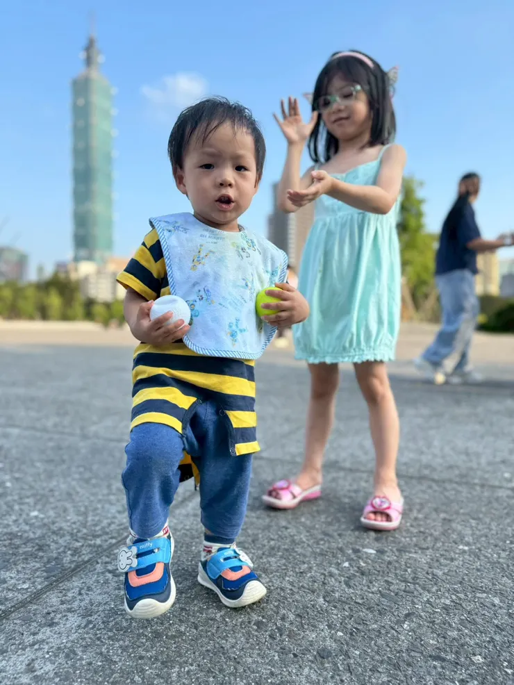
龍弟弟鼠姊姊準備大展身手
鼠姊姊到大巨蛋看棒球很新奇
雞爸爸整天回家都在看味全龍的轉播，鼠姐姐也常常跟爸爸一起看棒球。去年鼠媽媽公司提供了公關票，雞鼠爸媽一開始還擔心帶鼠姐姐去大巨蛋那麼長的時間，坐不坐得住，結果不但看完比賽，還聽完賽後趙傳的表演，鼠姐姐說今年還想要去看。
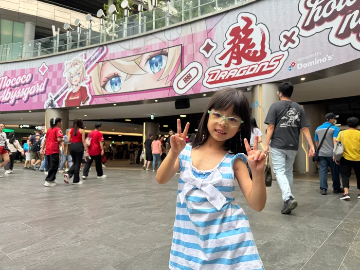
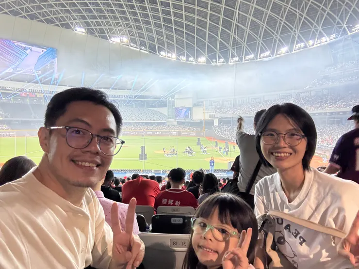
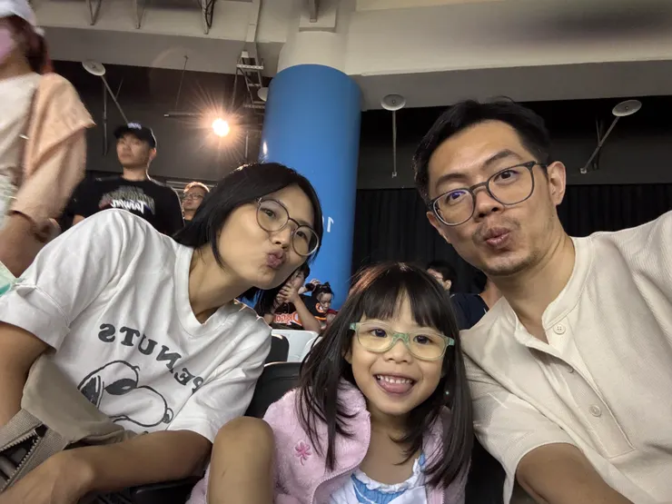
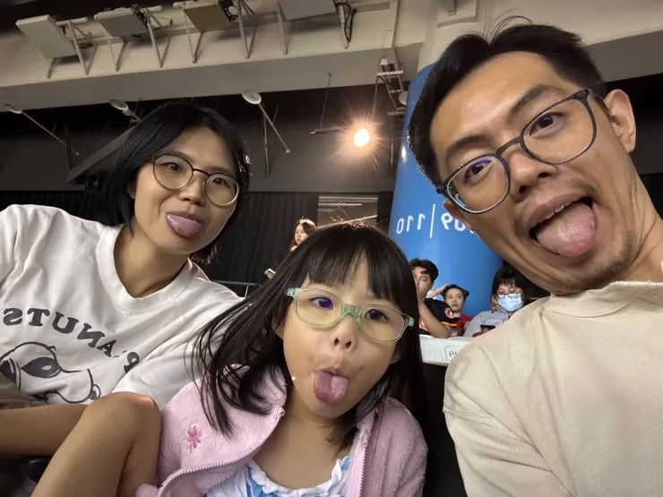
挑了玩具吵著要去打棒球
有一天走到大賣場的運動用品區，鼠姐姐和龍弟弟不約而同的拿了一套玩具棒球組。原本想說塑膠的好像不是很耐用，但看著他們愛不釋手的樣子也就帶了一組回來。
既然買了，當然要好好運動一下。趁著天氣還不錯，一起到草皮上走走。
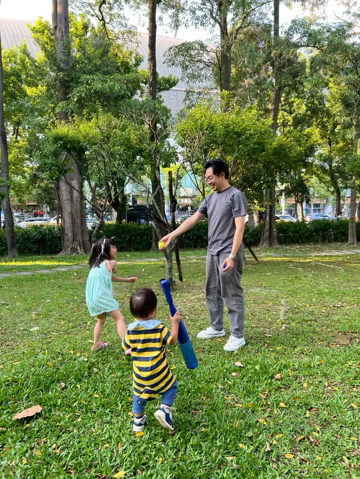
鼠姐姐有投球天分 很快進行投打練習
經過了基本訓練之後，鼠姐姐決定先從投球開始，從一開始一直往後飛的魔球，練習到可以控制高度、甚至可以丟給自己接的高飛球，一下子就可以擔任投手對決了。
雞爸爸其實有點感動：「居然有一天可以打我女兒投給我的球~」
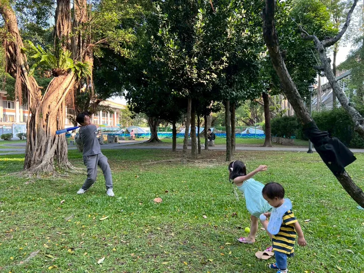
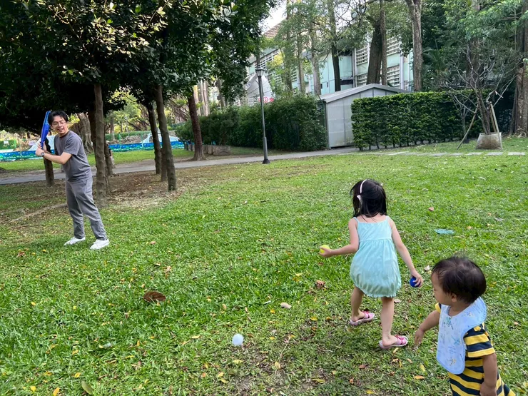
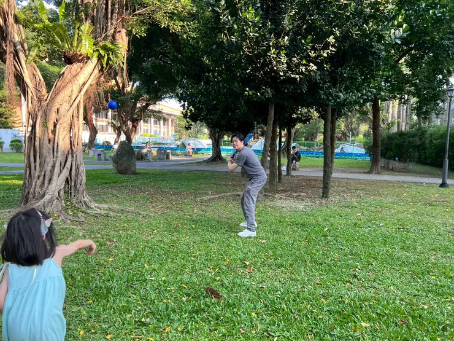
龍弟弟擔任球場實習生
弟弟雖然還沒有正式上場，但隱約看到一個左打/左投手即將誕生(吃飯是用右手，疑?)。
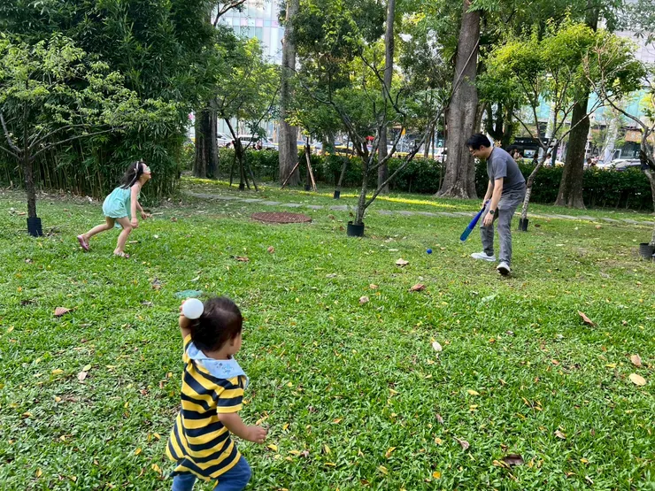
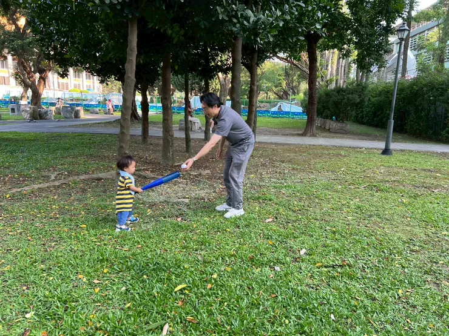
龍弟弟解鎖玩具新玩法
龍弟弟要揮棒打到球實在不容易，不如把棒子反過來當高爾夫球打。
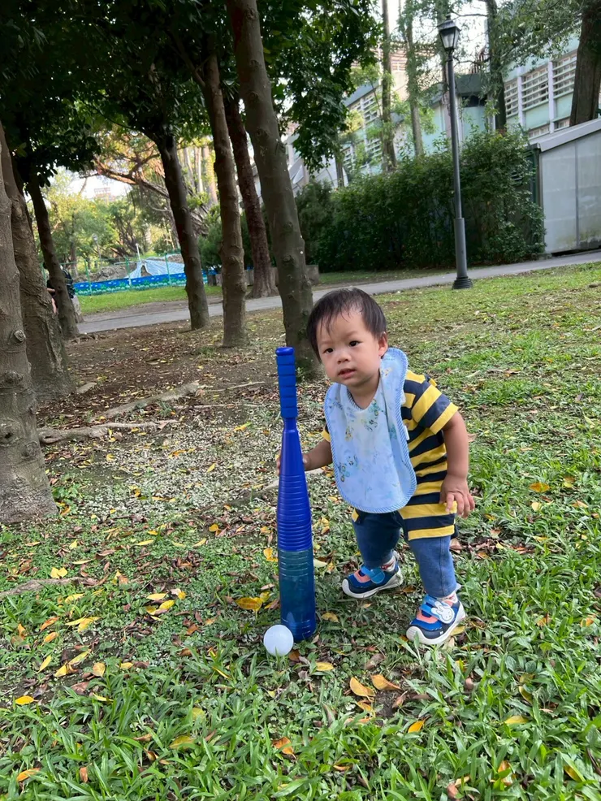
剛好我們也看到有一個小方格子可以當作球洞，倒是鼠姐姐玩高爾夫球玩得很開心。
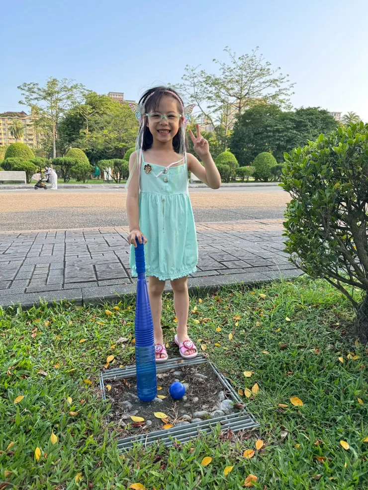
用音樂畫下完美句點
鼠姐姐完成棒球投手與高爾夫球訓練之後，被音樂給吸引，今天的訓練也即將到此結束。
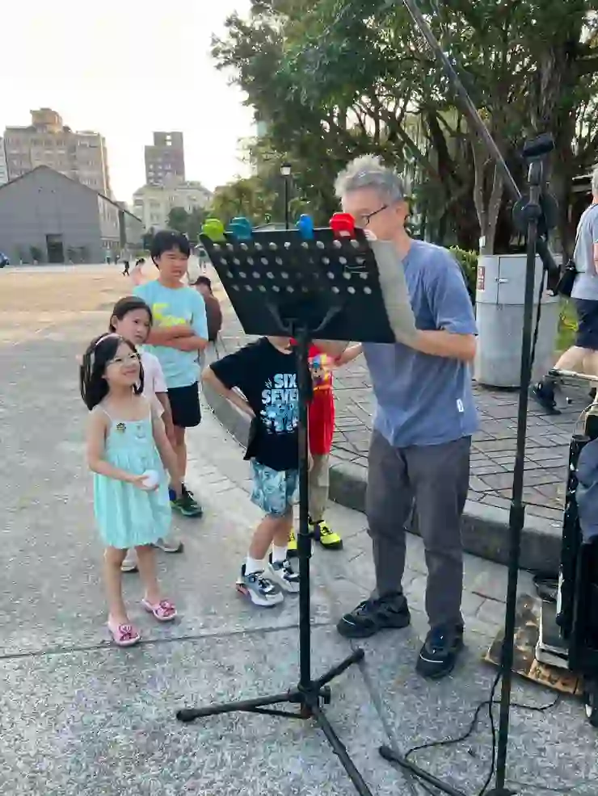
只是龍弟弟似乎還有心願沒有完成，手握著棒球，若有所思~~
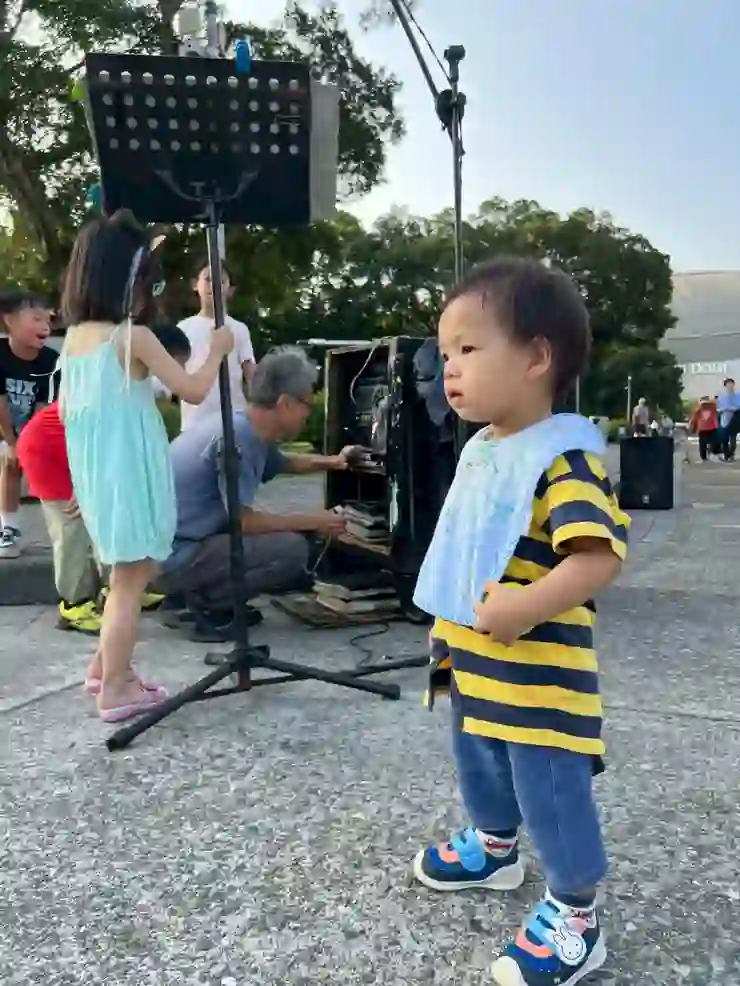
我想龍弟弟心裡應該是想，下次來我要成為一個，比101更耀眼的棒球選手! (完)
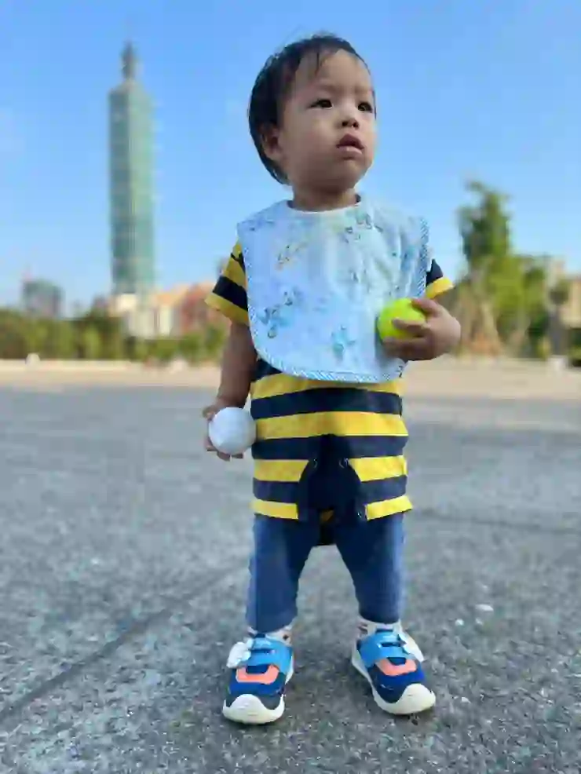
特別感謝
感謝辛苦美麗的鼠媽媽拍了美美的照片，捕捉到許多精彩的瞬間，留存美好的回憶~~
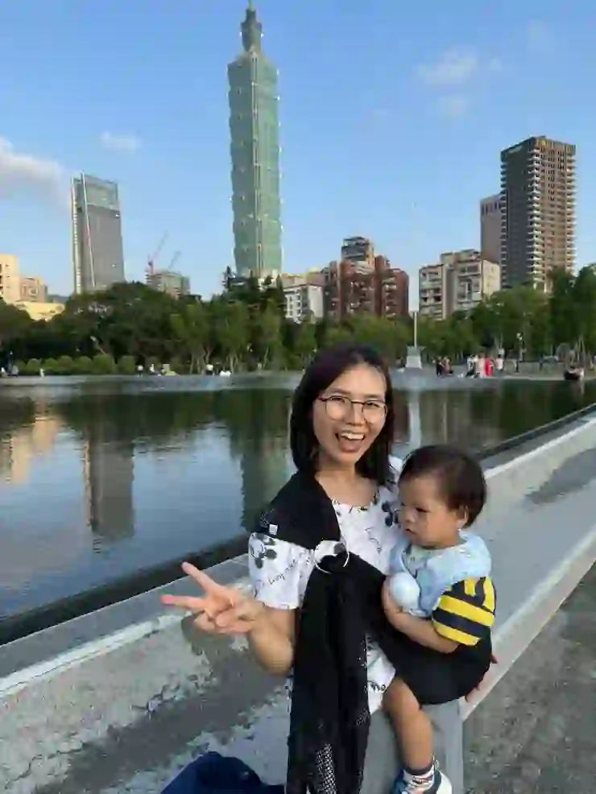